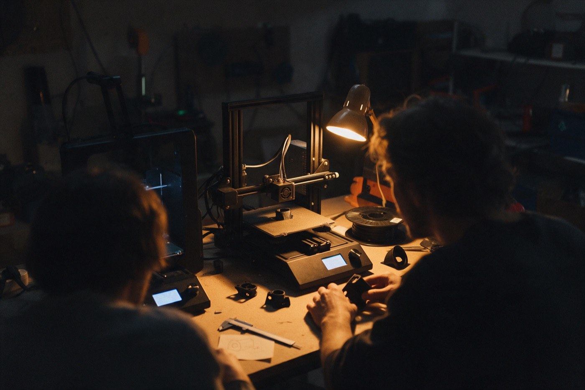

Über Kniff
Der erste Kniff war ein Münzsortierer.
Zwei Freunde aus Berlin. Aus einem gelösten Alltagsproblem wurde ein Shop und 3D-Druck auf Anfrage.
Das Problem kannten wir beide: immer Kleingeld dabei und nie die richtige Münze zur Hand. Ein bisschen in der Hosentasche, ein bisschen in der Mittelkonsole, der Rest in einer Schale neben der Tür. Gesucht haben wir trotzdem jedes Mal.
Also haben wir uns einen gebaut. Acht Röhren, für jede Euro-Münze eine, jede genau auf ihren Durchmesser bemaßt. Der Wert steht oben eingeprägt, vorn läuft ein Schlitz durch, damit man die oberste Münze mit dem Daumen herausschieben kann. Kein besonders schönes Teil, aber es tat genau, was es sollte.
Wir haben ihn auf eBay gestellt, mehr aus Neugier als aus Plan. In vierzehn Tagen gingen achtzehn Stück weg, alle an Leute, die wir nicht kannten. Das war das erste Teil, das jemand bei uns bestellt hat, statt es geschenkt zu bekommen.
Das war der Moment, in dem klar wurde: Das löst nicht nur unser Problem.
Daraus ist Kniff geworden. Wir drucken in Berlin, prüfen jedes Teil von Hand und benutzen es selbst, bevor es online geht. Ein Kniff ist für uns der eine Handgriff, der ein Alltagsproblem verschwinden lässt – nicht die große Erfindung, sondern das kleine Teil, nach dem man hinterher nicht mehr sucht.

Wir drucken längst nicht mehr nur Alltagshelfer, sondern so ziemlich alles, was sich mit einem 3D-Drucker umsetzen lässt: Ersatzteile, handwerkliche Bauteile, Modelle für Architektur- und Planungsbüros. Wenn du Fragen, Wünsche oder eine eigene Idee für ein 3D-Druck-Projekt hast, schreib uns einfach. Wir schauen uns jede Anfrage persönlich an.